RP 4 – Parcours de professionnalisation
Accès distant & Helpdesk 🔐
Mise en place d'un accès distant sécurisé avec double authentification, déploiement du helpdesk GLPI, et maquettage d'une solution de redondance FAI avec le protocole HSRP sur routeurs Cisco.
La demande
L'administrateur du siège de Tenerife souhaitait disposer d'un accès distant sécurisé et centralisé sur l'ensemble des équipements de chaque agence. En parallèle, la gestion des incidents devait être structurée via un outil de helpdesk dédié. Enfin, suite à une panne FAI de deux jours sur l'agence de Madère, une solution de redondance de connexion internet a été maquettée pour éviter ce type de situation.
Objectifs du RP 4
- ➜ Centraliser les connexions d'administration sous MobaXterm (SSH, RDP, HTTPS)
- ➜ Activer la double authentification 2FA sur le pare-feu Stormshield (Google Authenticator)
- ➜ Gérer et vérifier les flux réseaux via les règles de filtrage
- ➜ Déployer GLPI avec GLPI_Agent pour l'inventaire automatique et le helpdesk
- ➜ Tester les remontées d'équipements et le cycle de vie des tickets
- ➜ Rédiger une procédure utilisateur pour la création de tickets GLPI
- ➜ Maquetter une solution de redondance FAI avec HSRP (Cisco)
Le plan
Plan d'adressage IP
| Équipement / VM | Rôle | Adresse IP | Accès |
|---|---|---|---|
| 🏢 Agence El Hierro — 192.168.54.0/24 | |||
| Stormshield SNS 310 | Pare-feu / VPN (2FA activé) | 192.168.54.254 |
Interface web + code OTP |
| AD / DNS / DHCP | Windows Server 2019 | 192.168.54.10 |
RDP |
| SRV-EL-WEB-01 | Serveur Apache | 192.168.54.15 |
SSH |
| SRV-EL-WEB-02 | Serveur Apache | 192.168.54.16 |
SSH |
| SRV-EL-PROXY | HAProxy (DMZ) | 192.168.64.1 |
SSH |
| ESXi principal | Hyperviseur LAN | 192.168.54.1 |
Interface web ESXi |
| ESXi secondaire | Hyperviseur (Load Balancing) | 192.168.69.94 |
Interface web ESXi |
| TP-Link SG-3424 | Switch manageable | 192.168.54.20 |
Interface web admin |
| AP WiFi WA901N | Borne WiFi 802.1X | 192.168.54.30 |
Interface web admin |
| 🏢 Siège Tenerife — 192.168.57.0/24 | |||
| Zimbra Mail | Messagerie | 192.168.57.40 |
HTTPS |
| Centreon | Supervision SNMP | 192.168.57.50 |
HTTPS |
| TrueNAS | NAS RAID-5 (Veeam) | 192.168.57.2 |
Interface web admin |
| GLPI | Helpdesk & Inventaire | 192.168.57.60 |
HTTPS |
Schéma d'infrastructure
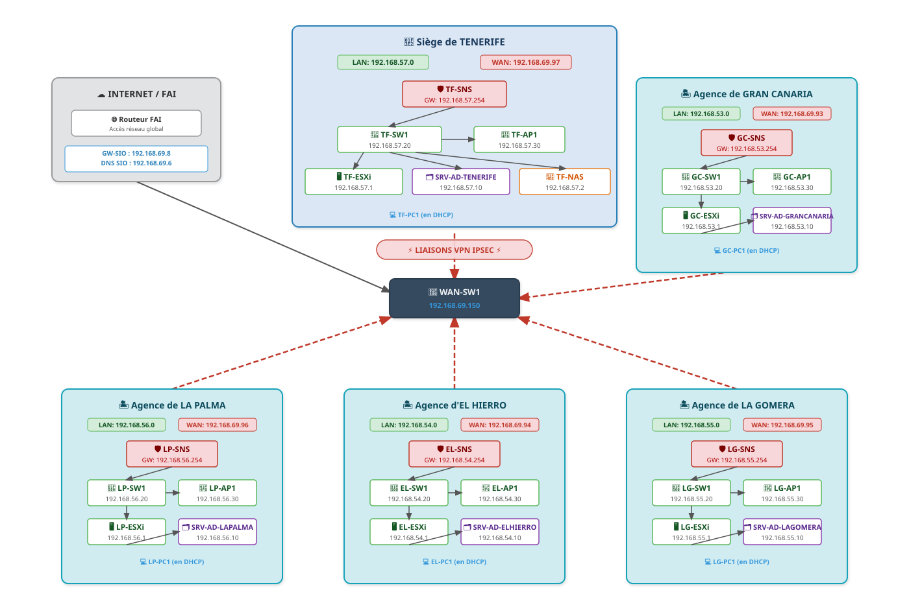
Infrastructure réseau avant déploiement des solutions d'accès distant — segmentation par VLANs et sécurisation StormshieldLe projet
🖥️ 1. Accès distant centralisé — MobaXterm
MobaXterm permet de centraliser toutes les connexions d'administration depuis un seul outil : SSH vers les serveurs Linux, RDP vers le serveur Active Directory, et HTTPS vers l'interface web du Stormshield. L'ensemble des sessions transite via le tunnel VPN IPsec déjà en place entre l'agence El Hierro et le siège de Tenerife. Cette centralisation simplifie le travail de l'administrateur et réduit les risques d'erreur liés à la multiplication des outils.
 Sessions SSH, RDP et HTTPS enregistrées pour l'ensemble des équipements de l'agence El Hierro
Sessions SSH, RDP et HTTPS enregistrées pour l'ensemble des équipements de l'agence El Hierro
🔐 2. Double authentification 2FA — Google Authenticator
Pour renforcer la sécurité des accès administratifs au pare-feu Stormshield SNS 310, l'authentification à deux facteurs a été activée. La méthode retenue est le One Time Password (OTP) via l'application Google Authenticator : après avoir saisi son mot de passe, l'administrateur doit entrer un code à usage unique généré par son téléphone, renouvelé toutes les 30 secondes. Cette double vérification empêche toute connexion même en cas de vol du mot de passe.
 Interface Stormshield — activation de la 2FA pour l'administrateur via Google Authenticator (OTP)
Interface Stormshield — activation de la 2FA pour l'administrateur via Google Authenticator (OTP)
 Page de connexion demandant le code OTP généré par Google Authenticator après saisie du mot de passe
Page de connexion demandant le code OTP généré par Google Authenticator après saisie du mot de passe
🌐 3. Gestion des flux — Tunnel VPN IPsec
Un tunnel VPN IPsec est maintenu entre le Stormshield SNS 310 de l'agence El Hierro et le pare-feu du siège de Tenerife. Ce tunnel chiffré sécurise l'ensemble des communications entre les deux sites : accès distants des administrateurs, transferts de sauvegardes Veeam vers le NAS, et synchronisation des données. Le profil de chiffrement retenu est StrongEncryption.
 Console Stormshield SNS 310 — tunnels VPN IPsec établis entre El Hierro (192.168.54.0/24) et le siège Tenerife (Site_FW_TF)
Console Stormshield SNS 310 — tunnels VPN IPsec établis entre El Hierro (192.168.54.0/24) et le siège Tenerife (Site_FW_TF)
📦 4. Déploiement GLPI — Inventaire & Helpdesk
GLPI est installé au siège de Tenerife et accessible depuis toutes les agences via le VPN. L'agent GLPI_Agent est déployé sur l'ensemble des postes et serveurs : il remonte automatiquement l'inventaire matériel et logiciel de chaque machine dans la console GLPI, sans intervention manuelle. Cette solution permet également aux utilisateurs de soumettre des tickets d'incident ou des demandes de service directement depuis leur navigateur.
 Liste des équipements remontés automatiquement par GLPI_Agent dans la console
Liste des équipements remontés automatiquement par GLPI_Agent dans la console
 Déploiement et configuration de GLPI_Agent sur un poste client
Déploiement et configuration de GLPI_Agent sur un poste client
🧪 5. Tests des remontées et tickets
Plusieurs tests ont été réalisés pour valider le bon fonctionnement de l'ensemble : connexion d'un nouveau poste au réseau et vérification de sa remontée automatique dans l'inventaire GLPI, création d'un ticket depuis un compte utilisateur et vérification de la notification reçue par l'administrateur, puis traitement complet du ticket (prise en charge, changement de statut, clôture).
📝 6. Procédure utilisateur — Créer un ticket GLPI
Une procédure a été rédigée à destination des utilisateurs non-techniciens pour leur permettre de soumettre des demandes de manière autonome et structurée.
Cette procédure décrit les étapes à suivre pour soumettre une demande via GLPI, qu'il s'agisse d'un incident (dysfonctionnement) ou d'une demande de service. Toute demande doit impérativement transiter par GLPI pour garantir un traitement structuré, un suivi efficace et une traçabilité complète.
Accès à la plateforme
- Ouvrir un navigateur et aller sur
https://glpi.el-cicars.es - S'authentifier avec ses identifiants professionnels
- Depuis la page d'accueil, choisir entre « Signaler un problème » ou « Demander un service »
Choix du type de demande
⚠️ Signaler un problème
- Application indisponible
- Incident matériel
- Message d'erreur
✦ Demander un service
- Demande d'accès ou de droits
- Installation de logiciel
- Demande de matériel
Remplissage du formulaire
Ajout de pièces jointes
- Joindre des captures d'écran illustrant le problème
- Ajouter tout fichier journal ou document utile au diagnostic
Validation et envoi
- Vérifier les informations saisies avant envoi
- Cliquer sur « Envoyer » pour créer le ticket
- Une confirmation est transmise automatiquement par e-mail
Suivi de la demande
- Accéder à « Voir vos tickets » depuis la page d'accueil
- Tous les échanges avec le support sont centralisés dans le ticket
- Toute mise à jour génère une notification e-mail automatique


📋 Livrables RP4 validés
Redondance FAI — Maquettage HSRP
Suite à une panne FAI de deux jours sur l'agence de Madère qui a paralysé l'activité, le gérant a demandé une solution de redondance de la connexion internet. La solution retenue est le protocole HSRP (Hot Standby Router Protocol) avec deux routeurs Cisco, permettant un basculement automatique et transparent en cas de défaillance du lien WAN principal.
Contexte et solution retenue
L'architecture maquettée repose sur deux routeurs Cisco connectés chacun à un FAI différent. Les clients du LAN utilisent une IP virtuelle unique (192.168.1.254) comme passerelle par défaut — gérée par HSRP. En cas de panne du routeur actif, le routeur de secours prend automatiquement le relais sans aucune reconfiguration côté client. Un tracking d'interface WAN déclenche le basculement dès que le lien internet principal tombe.
Plan d'adressage de la maquette
| Équipement | Interface | Adresse IP | Rôle |
|---|---|---|---|
| router1 | Fa0/3/0 | 192.168.1.250/24 | LAN — ip nat inside |
| router1 | Fa0/3/1 | DHCP (FAI 1) | WAN — ip nat outside |
| router2 | Fa0/3/0 | 192.168.1.251/24 | LAN — ip nat inside |
| router2 | Fa0/3/1 | DHCP (FAI 2) | WAN — ip nat outside |
| HSRP VIP | — | 192.168.1.254 | Passerelle virtuelle partagée |
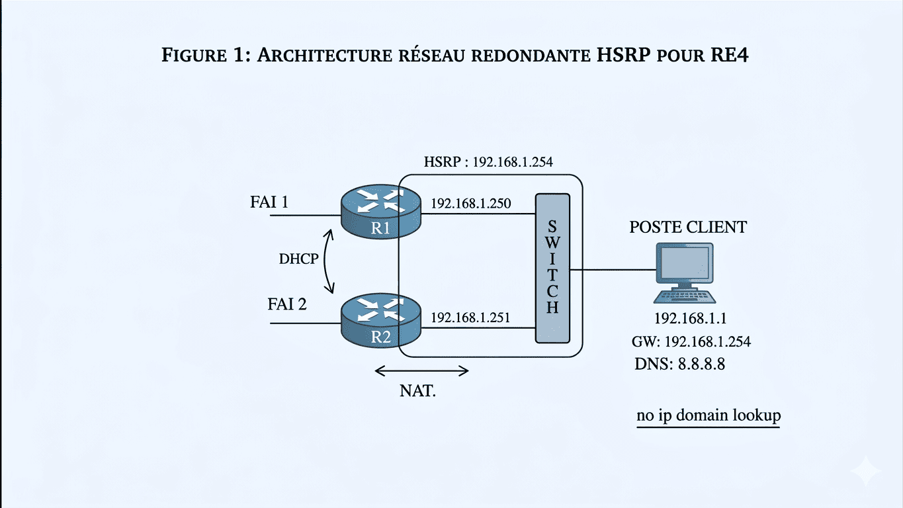
FAI 1 → R1 (192.168.1.250) — FAI 2 → R2 (192.168.1.251) — VIP HSRP : 192.168.1.254 — Poste client GW : 192.168.1.254🔧 Étape 1 — Configuration des interfaces
Sur chaque routeur, l'interface LAN (Fa0/3/0) est configurée avec une IP fixe
dans le réseau 192.168.1.0/24, et l'interface WAN (Fa0/3/1)
est configurée en DHCP pour récupérer une adresse auprès du FAI correspondant.
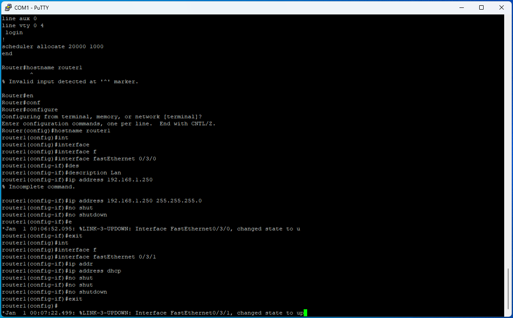
Fa0/3/0 : 192.168.1.250/24 (LAN) — Fa0/3/1 : DHCP (WAN FAI 1)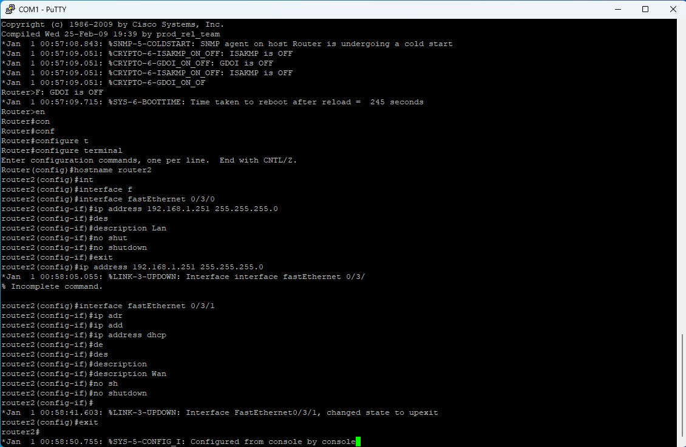
Fa0/3/0 : 192.168.1.251/24 (LAN) — Fa0/3/1 : DHCP (WAN FAI 2)⚡ Étape 2 — Configuration HSRP
Router1 est configuré avec une priorité de 95 et le mode preempt activé,
ce qui lui permet de reprendre le rôle de routeur actif dès son retour en ligne.
Un tracking sur l'interface WAN réduit automatiquement sa priorité de 10
si le lien internet tombe, provoquant le basculement vers router2 qui dispose
d'une priorité par défaut de 100.
interface fastEthernet 0/3/0
standby 1 ip 192.168.1.254
standby 1 priority 95
standby 1 preempt
standby 1 track fastEthernet 0/3/1 10
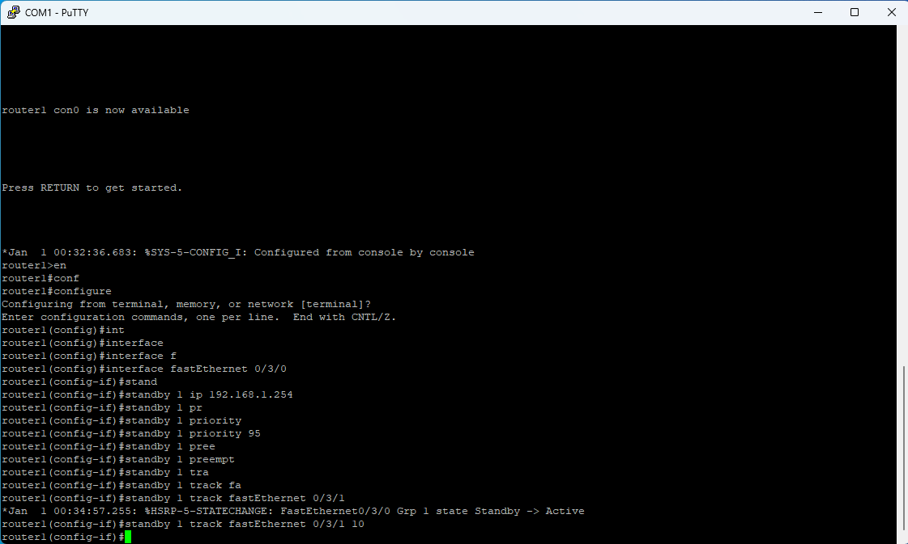
VIP 192.168.1.254 — Priorité 95 — Preempt — Track Fa0/3/1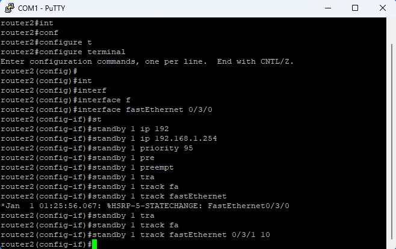
Priorité 100 (défaut) — devient actif si router1 bascule🌐 Étape 3 — NAT overload sur les deux routeurs
Le NAT overload (PAT) est configuré sur chaque routeur pour permettre à l'ensemble
des postes du LAN (192.168.1.0/24) de sortir sur internet via l'interface
WAN du routeur actuellement actif dans le groupe HSRP.
access-list 1 permit 192.168.1.0 0.0.0.255
ip nat inside source list 1 interface fastEthernet 0/3/1 overload
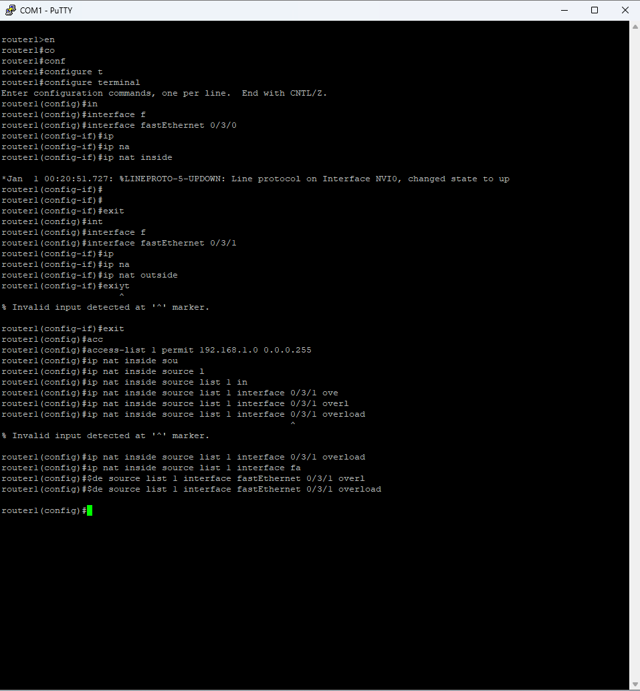
NAT overload sur Fa0/3/1 — access-list 1 / 192.168.1.0/24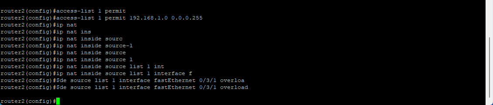
NAT overload sur Fa0/3/1 — access-list 1 / 192.168.1.0/24🔐 Étape 4 — Activation SSH pour l'accès distant sécurisé
SSH version 2 est configuré sur chaque routeur pour permettre l'administration à distance de manière sécurisée. Une clé RSA de 2048 bits est générée, et l'accès par Telnet est désactivé sur les lignes VTY au profit de SSH uniquement.
username adminlocal secret Afpi5962!
ip domain-name cicar.es
crypto key generate rsa ← 2048 bits
ip ssh version 2
line vty 0 4
transport input ssh
transport output ssh
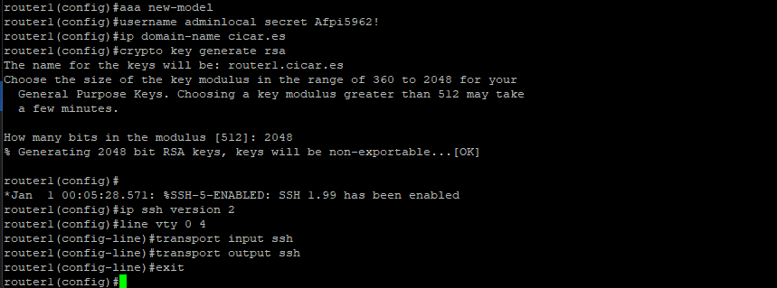
Génération de la clé RSA 2048 bits — SSH v2 activé — domaine cicar.es🧪 Étape 5 — Tests et validation HSRP
La commande show standby sur chaque routeur
permet de confirmer l'état HSRP, la priorité effective, l'IP virtuelle active
et l'état du tracking d'interface. Un test de basculement a été réalisé
en simulant une panne du lien WAN de router1 : router2 a pris le relais
automatiquement, sans interruption pour les clients du LAN.
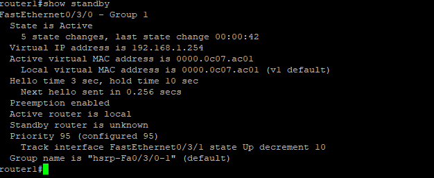
State : Active — VIP 192.168.1.254 — Priorité 95 — Track Fa0/3/1 (Up, -10)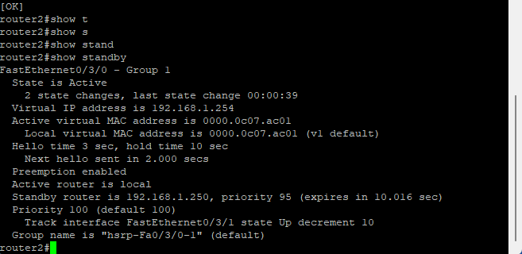
State : Active (lors du basculement) — VIP 192.168.1.254 — Priorité 100📋 Livrables RE4 validés
show standby validée — clients LAN sans interruption lors du failoverSchéma réseau final — RP4
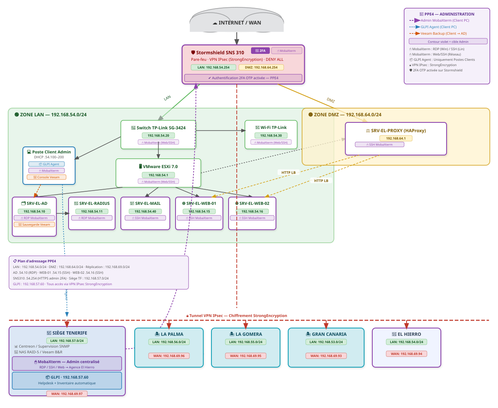
Architecture complète incluant les accès distants sécurisés (2FA), le helpdesk GLPI et l'administration centralisée via MobaXterm